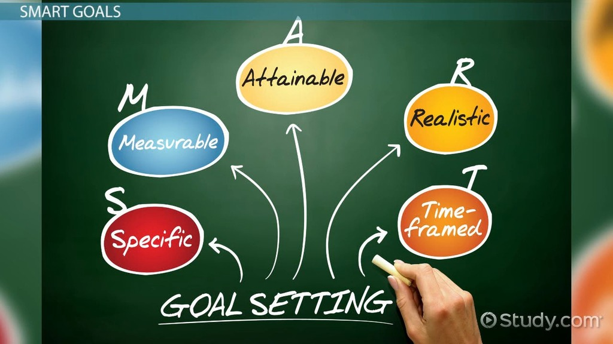

Let's recap! Future orientation is a time perspective that is focused on the future, especially on how to achieve your future goals.

Sometimes we can loose focus on the big picture. Below you will find resources that you can turn to when your brain becomes foggy. Here's a video that explains how to keep a Future Oriented mindset.